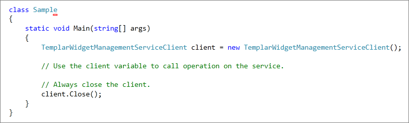
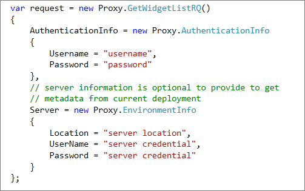
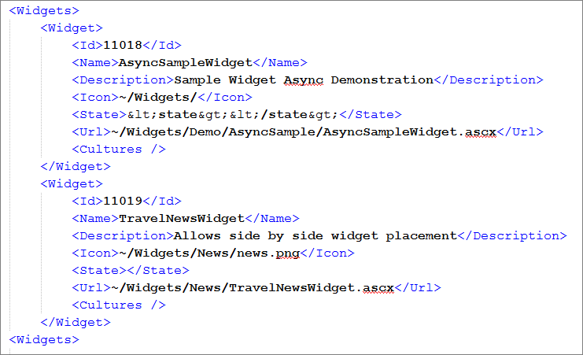

The purpose of this document is to:
If you have comments /queries about this documentation, email them to:
1. Introduction
2. How to access it?
3. Recommendations
4. Common Parameters
Common Request Parameters
Common Response Parameters
Common Error Messages
5. Service Methods
GetWidgetList
6. Detailed Object Model
Widget
As the name suggests Templar Widget Management Service (TWMS) is used to programmatically manage all widget related activities for Templar deployment. At a high level it provides features like the ability to get and manage widgets on a deployment.
The TWMS can be accessed at /Templar/Services/TemplarWidgetManagementService.svc url on the base Templar deployment. To use TWMS, you will need to create a client and use it to call the TWMS. You can do this using the svcutil.exe tool from the command line with the following syntax:
svcutil.exe http://templarDeployment.com/Templar/Services/TemplarWidgetManagementService.svc?wsdl
This will generate a configuration file and a code file that contains the client class. Add the two files to your client application and use the generated client class to call the Service. For example:

Every request to the service must contain authentication information described below.
-----------------------------------------------------------------------------
| Name | Type | Description |
-----------------------------------------------------------------------------
| Username | String | Templar username for the deployment |
| Password | String | Password for the above specified username |
-----------------------------------------------------------------------------
Every response from the service contains following information related to the status of operation performed.
---------------------------------------------------------------------------------------------------------
| Name | Type | Description |
---------------------------------------------------------------------------------------------------------
| IsSuccessful | Bool | Is true if operation was performed successfully, else false. |
| Message | String | Contains message corresponding to status of the operation performed.|
| ResponseCode | Int | Response code corresponding to status of the service call. |
--------------------------------------------------------------------------------------------------------
-------------------------------------------------------------------------------------------------------------------------
| Code | Message | Description |
-------------------------------------------------------------------------------------------------------------------------
| 401 | Authentication failed | Server was not able to authenticate using username and password provided. |
| 500 | Error occurred while | Some unexpected error occurred while performing the operation on server.
processing your request Check server exception logs for further details. |
-------------------------------------------------------------------------------------------------------------------------
Returns list containing metadata of widgets at current server.
AuthenticationInfo and EnvironmentInfo (optional) are required parameters to call this method. Sample request below describes the request object formation.
Along with common response parameters, following information is also returned as a part of response object.
---------------------------------------------------------------------------------
| Name | Type | Description |
---------------------------------------------------------------------------------
| Widgets | List<Widget> | List containing metadata of the widgets.|
---------------------------------------------------------------------------------


-------------------------------------------------------------------------
| Name | Type | Description |
-------------------------------------------------------------------------
| Id | Long | Id of the widget |
| Name | String | Name of the widget |
| State | String | Default state of the widget |
| Url | String | Url of the location of widget |
| Icon | String | Url for icon file of the widget |
| Description | String | Description of the widget |
| Cultures | List<Culture> | List of cultures of the widget |
-------------------------------------------------------------------------